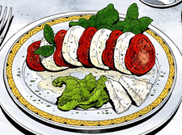

Aperitivo — Mineral Water
50,000-year-old melted snow from Mt. Kilimanjaro.
$3.00

Traditional Italian dishes prepared with fresh ingredients.
50,000-year-old melted snow from Mt. Kilimanjaro.
$3.00

Mozzarella, tomato, anchovy fillet, seaweed, and Sicilian basil.
$8.80

Garlic, black olives, anchovy, hot pepper, and parsley.
$10.00

Rare-sliced abalone, cheese, winter melon, and abalone liver sauce.
$18.00

Three chops with sweet-and-sour applesauce and asparagus dressing.
$20.00

Tender tentacles in a rich, slow-simmered tomato sauce.
$16.50

Silky house-made pudding topped with caramel.
$5.00

House pie made using a family recipe.
$6.00